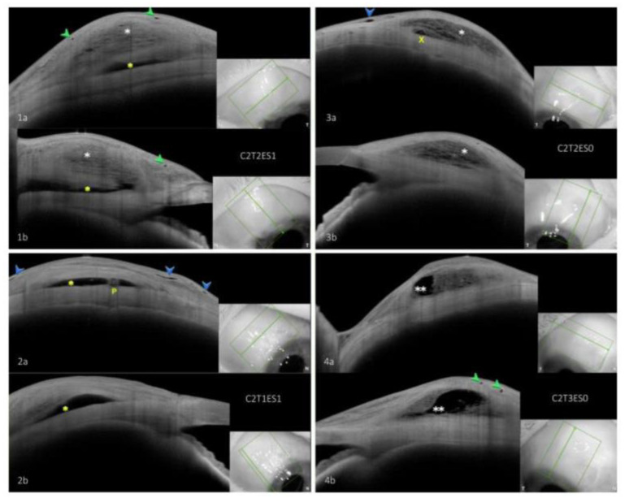
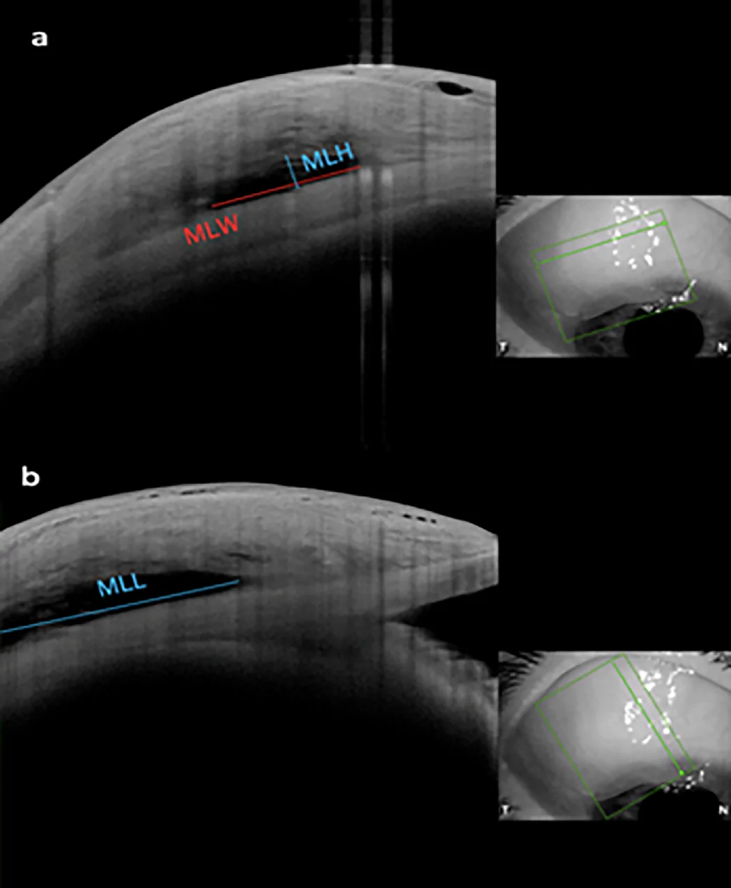
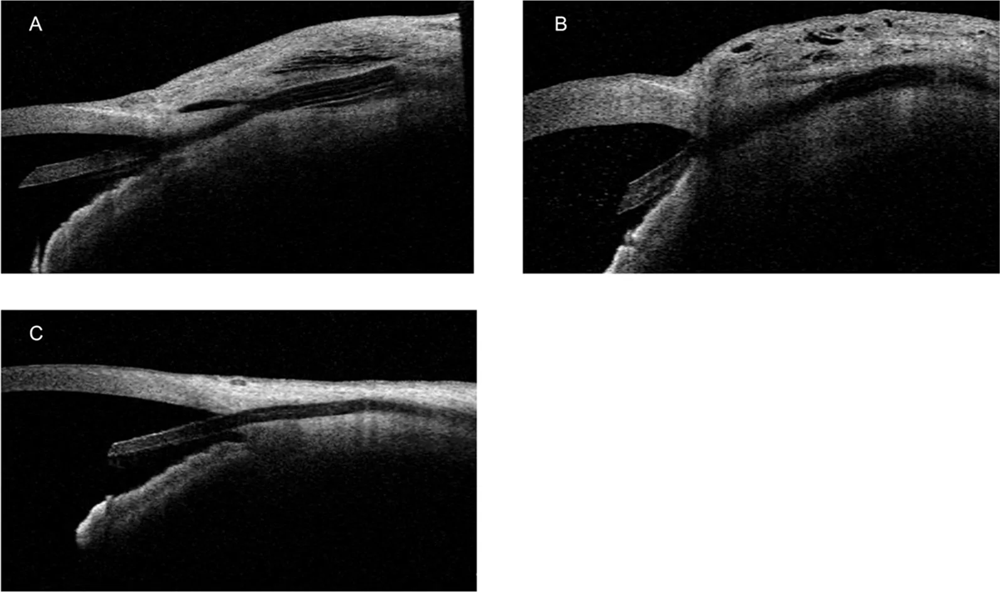
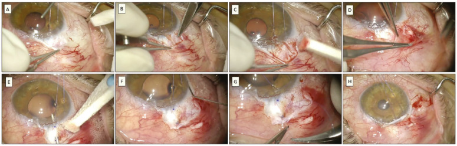
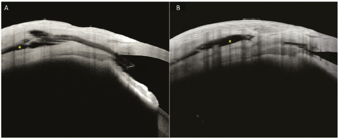

3213 — Bọng dẹt sau PreserFlo MicroShunt: hồ thượng củng mạc quyết định, không phải độ dày thành — chọc bọng, rút stent hay rút ống / Flat bleb after PreserFlo MicroShunt
Tags: pattern:bong-det pattern:khong-ho-thuong-cung-mac pattern:dau-ngoai-tiep-xuc-tenon pattern:nang-tenon pattern:loi-ong pattern:stent-nylon-trong-long pattern:ong-trong-cung-mac pattern:ong-dao-nguoc pattern:lo-ong pattern:tut-ong pattern:ong-cham-mong-mat pattern:bit-dau-trong vung:mat vung:bong-loc vung:cung-mac vung:tenon vung:tien-phong vung:goc-tien-phong protocol:AS-OCT protocol:gonioscopy protocol:needling protocol:rut-ong score:IOP score:chieu-cao-bong score:ho-thuong-cung-mac
Mức chắc chắn (certainty): tổng hợp y văn (literature synthesis) — ghép 1 nghiên cứu AS-OCT 51 mắt, chụp ở tuần 4, tìm yếu tố dự báo thành công (Ishaq T et al., Transl Vis Sci Technol 2026, PMID 42949052, PMC13722969, CC BY 4.0), 1 đoàn hệ 88 mắt về kiểu lọc trên AS-OCT tháng 1 (Minami T et al., Adv Ther 2026, PMID 42518141, PMC13619755, CC BY-NC 4.0), 1 so sánh 80 mắt PreserFlo (41) vs XEN (39) bằng AS-OCT (Hasan SM et al., Diagnostics 2023, PMID 37510061, PMC10377986, CC BY 4.0), 1 đoàn hệ thực hành 81 mắt theo 2 năm (Zeier A et al., Front Ophthalmol 2026, PMID 42745877, PMC13574660, CC BY 4.0), 1 đoàn hệ 40 mắt 1 năm (Cheng TC et al., Clin Ophthalmol 2026, PMID 42454273, PMC13367356, CC BY-NC 4.0), 1 nghiên cứu khả thi 23 mắt theo 5 năm (Batlle JF et al., J Glaucoma 2021, PMID 33137019, PMC8041565, CC BY-NC-ND 4.0 — tác giả thứ nhất là cố vấn của InnFocus/Santen, đơn vị sản xuất ống) và 4 ca báo (di lệch ống sau needling; nhiễm bọng liên quan chỉ stent; tắc lòng do sắc tố khi ống vào rãnh thể mi; lộ/thò ống). Chỗ suy luận ghi rõ "suy luận"; ngưỡng chưa có dữ liệu cho người Việt ghi "chưa rõ".
Vì sao bài này quan trọng: 3209 dạy đọc bọng XEN — ống gelatin 45/63 µm đặt ab interno, không có vạt kết mạc. PreserFlo MicroShunt là thiết bị khác về bản chất: 8,5 mm, lòng 70 µm, đường kính ngoài 350 µm, polymer SIBS, đặt ab externo qua đường hầm củng mạc có vạt Tenon–kết mạc, không có van, đầu ngoài nằm ~6 mm sau rìa giác mạc nên bọng ra sau hơn bọng XEN. Hệ quả là không được bê nguyên ngưỡng XEN sang: trên 80 mắt, bọng PreserFlo cao hơn (2,13 vs 1,85 mm), rộng hơn (10,31 vs 9,1 mm), thành dày hơn (1,60 vs 1,1 mm) và có hồ thượng củng mạc 92,7% vs 30,8% (Hasan 2023). Và điều quan trọng nhất: ở PreserFlo, thành bọng dày KHÔNG dự báo thất bại — hồ thượng củng mạc mới là thứ dự báo thành công (OR 9,76) (Ishaq 2026). Bài này trả lời 3 câu thực hành: đọc gì trên AS-OCT, khi nào chọc bọng, và khi nào phải rút ống (khác "rút chỉ stent" trong lòng ống).
1. Tổng quan bệnh học – cơ chế hình ảnh: một ống 70 µm không van, đặt sau vạt Tenon
1.1 Thiết bị và kỹ thuật — các con số quyết định cách đọc bọng
- Vật liệu và kích thước: PreserFlo MicroShunt (trước đây là InnFocus MicroShunt) làm bằng poly(styrene-block-isobutylene-block-styrene) (SIBS), dài 8,5 mm, đường kính ngoài 350 µm, lòng 70 µm → thành ống dày (350 − 70)/2 = 140 µm mỗi bên (Cheng 2026; Batlle 2021).
- Không có van. Khác Ahmed/Baerveldt, ống không có cơ chế tự đóng khi áp lực thấp. Đây là lý do kỹ thuật thường dùng một sợi chỉ nylon 10-0 luồn trong lòng ống như "van tay", rút ra sau khoảng 1 tháng (Nishigaki 2026).
- Đường vào ab externo: rạch kết mạc fornix-based, tách vạt Tenon–kết mạc 8–10 mm ra sau, đặt mitomycin C (MMC) 0,2–0,4 mg/mL trong 2–3 phút, tạo đường hầm củng mạc, đưa ống vào tiền phòng song song với mống mắt (Cheng 2026).
- Vị trí đầu ngoài: nằm dưới kết mạc–Tenon, ~6 mm sau rìa giác mạc → bọng ra sau hơn bọng XEN (trung vị 6,21 ± 1,2 mm so với 5,21 ± 1,8 mm sau rìa; Hasan 2023). Đây là lý do lát cắt AS-OCT đặt 2 mm sau rìa có thể không thấy hồ — phải quét dọc trục ống, không quét theo mốc rìa.
- Vì sao 140 µm thành ống quan trọng trên AS-OCT: thành SIBS tăng hồi âm và cho hai đường song song; lòng 70 µm thường dưới độ phân giải trục của nhiều máy, nên thấy ống ≠ chứng minh lòng thông. Muốn đánh giá lòng phải phối hợp soi góc + đáp ứng nhãn áp (intraocular pressure, IOP), không chỉ ảnh.
1.2 Vật lý: vì sao 70 µm vừa "đủ thoát" vừa "dễ tụt áp" — và vì sao hay có stent
- Theo Poiseuille, trở lực R = 8µL/(πr⁴): đường kính tăng gấp đôi thì trở lực giảm 16 lần.
- So với XEN45 (45 µm): (70/45)⁴ ≈ 5,9 → PreserFlo có trở lực ~1/6 XEN45 (suy luận từ công thức).
- So với XEN63 (63 µm): (70/63)⁴ ≈ 1,5 → trở lực thấp hơn ~1/3 (suy luận).
- Hệ quả lâm sàng: lòng rộng hơn + không van → nguy cơ tụt áp sớm cao. Trong 40 mắt, 17,5% có IOP ≤ 5 mmHg sớm sau mổ, 2,5% còn tụt áp ở 1 năm nhưng không mất thị lực (Cheng 2026). Trong 23 mắt theo 5 năm: tụt áp thoáng qua 3/23 (13,0%), tiền phòng nông/dẹt 3/23 (13,0%), bong hắc mạc thoáng qua 2/23 (8,7%), máu tiền phòng 2/23 (8,7%) (Batlle 2021).
- Vì sao có chỉ stent: sợi nylon 10-0 trong lòng 70 µm làm giảm tiết diện thoát trong giai đoạn đầu, rồi rút ở tháng 1 để mở lưu lượng. Trên AS-OCT, chỉ stent là đường tăng hồi âm mảnh nằm trong lòng ống — không phải xơ hóa. Rút chỉ stent là một thủ thuật có hậu quả: ca báo ghi nhận tụt áp và bong hắc mạc thoáng qua sau rút, tự khỏi (Nishigaki 2026).
- Lòng 70 µm vẫn rất dễ tắc: ca báo ống đặt nhầm vào rãnh thể mi cho thấy lòng không xẹp, không biến dạng, nhưng bị bít bởi vật liệu nâu đen chứa nhiều hạt sắc tố (Takeda 2026) — tức là sắc tố mống mắt, không phải fibrin. Kích thước hạt/tơ huyết tương cùng bậc với 70 µm, nên "một cục nhỏ" đủ bít.
1.3 Vì sao bọng PreserFlo khác bọng XEN — và vì sao "thành dày" là bẫy
- Trên 80 mắt bọng còn chức năng (41 PreserFlo, 39 XEN), khác biệt có ý nghĩa (Hasan 2023):
| Thông số (AS-OCT) | PreserFlo | XEN | p |
|---|---|---|---|
| Có hồ thượng củng mạc | 92,7% | 30,8% | < 0,001 |
| Chiều cao bọng | 2,13 ± 0,5 mm | 1,85 ± 0,6 mm | 0,03 |
| Chiều rộng bọng | 10,31 ± 2,3 mm | 9,1 ± 2,3 mm | 0,02 |
| Chiều dài bọng | 9,13 ± 1,8 mm | 8,24 ± 1,9 mm | 0,04 |
| Khoảng cách sau rìa | 6,21 ± 1,2 mm | 5,21 ± 1,8 mm | 0,005 |
| Độ dày thành bọng | 1,60 ± 0,5 mm | 1,1 ± 0,4 mm | 0,004 |
| Tenon tăng hồi âm | 31,7% | 10,3% | 0,02 |
| Thay đổi dạng hang (cavernous) | 17,1% | 35,9% | 0,05 |
- Cơ chế (suy luận có căn cứ): PreserFlo đi ab externo nên có vạt Tenon–kết mạc và đường hầm củng mạc → thành bọng dày hơn, Tenon xơ hơn; XEN đi ab interno xuyên củng mạc, không vạt → thành mỏng hơn, dễ tạo dạng hang. Vì vậy đừng so bọng PreserFlo với bọng XEN bằng cùng một thước.
- Phản trực giác quan trọng nhất: trong 51 mắt PreserFlo, chiều cao, chiều rộng và độ hồi âm thành bọng KHÔNG liên quan tới thành công, trong khi sự hiện diện của hồ thượng củng mạc liên quan mạnh (OR 9,76; 95% CI 2,23–42,72) (Ishaq 2026). Nói cách khác: thành dày một mình không phải lý do để chọc bọng.
1.4 Đọc bọng để dự báo, không chỉ để mô tả
- Nghiên cứu then chốt (Ishaq 2026, 51 mắt, chụp AS-OCT ở tuần 4, theo 6 tháng): thành công hoàn toàn 51%; nhóm thành công có hồ dài 3,18 ± 1,59 vs 1,09 ± 1,63 mm, rộng 3,04 ± 1,87 vs 0,98 ± 1,4 mm, cao 0,33 ± 0,2 vs 0,15 ± 0,22 mm (p < 0,05 cho cả ba). Mô hình gồm chiều dài + chiều rộng hồ đạt độ chính xác 79,1% (độ nhạy 80,8%, độ đặc hiệu 77,3%).
- Hướng lọc cũng quan trọng (Minami 2026, 88 mắt, AS-OCT tháng 1): IOP trung vị 19 → 10 mmHg lúc 12 tháng; lọc hướng về rìa giác mạc giảm nguy cơ thất bại do tăng áp (HR 0,28–0,57); trục nhãn cầu dài là yếu tố thuận lợi (HR 0,70 và 0,77); tuổi cao và glôcôm giả tróc bao là yếu tố nguy cơ thất bại do tụt áp (HR 1,05 và 3,75).
- Hai mặt của cùng một đồng tiền: bọng càng "thoát tốt" (hồ lớn, hướng rìa) thì càng ít tăng áp — nhưng ở người già, giả tróc bao, cùng kiểu bọng đó lại kèm tụt áp. Vì vậy kết luận "bọng tốt" phải luôn đi kèm con số IOP và mục tiêu áp của bệnh nhân, không chỉ hình ảnh.
2. Mẫu hình + chẩn đoán phân biệt theo vị trí (Gamut)
Nguyên tắc: "bọng dẹt + IOP tăng" phải được định vị theo 4 tầng dọc ống, từ trong ra ngoài. Bỏ qua một tầng là chọc sai chỗ.
| Tầng | Vị trí | Nguyên nhân hay gặp | Thời điểm |
|---|---|---|---|
| 1. Đầu trong | Tiền phòng / rãnh thể mi | Ống vào rãnh thể mi (quá ra sau) → bít bằng sắc tố; ống chạm mống mắt; máu/fibrin; màng đồng tử | ngày–tuần |
| 2. Lòng ống | 70 µm | Chỉ stent nylon (cố ý), cục fibrin/máu, sắc tố, gập ống | ngày–tuần |
| 3. Đầu ngoài | Dưới Tenon, ~6 mm sau rìa | Tiếp xúc/dính đầu ngoài với Tenon, bao xơ đầu ngoài, ống nằm trong Tenon | 4–12 tuần |
| 4. Thành bọng | Kết mạc–Tenon | Xơ hóa lan tỏa, nang Tenon, lộ/thò ống (đầu xa, thân ống, chỉ khâu), nhiễm bọng | tuần–năm |
| Ngoài ống | Toàn nhãn cầu | Tăng IOP do corticoid, viscoelastic sót, tăng áp tĩnh mạch thượng củng mạc, bệnh glôcôm tiến triển | bất kỳ |
- Mnemonic "TIP–LUMEN–TIP–WALL" (đầu trong – lòng – đầu ngoài – thành): mỗi chữ là một câu hỏi trước khi động kim.
- Phân biệt bọng dẹt do xơ với bọng dẹt do tụt áp: bọng dẹt + IOP thấp = tụt áp (tìm bong hắc mạc, tiền phòng nông); bọng dẹt + IOP cao = tắc ở một trong 4 tầng. Không chọc bọng khi IOP thấp.
- Bọng "đẹp" mà IOP cao: vẫn có thể có hồ nhưng không thông (hồ bị vây), ống nằm trong Tenon, hoặc nguyên nhân ngoài ống. Luôn hỏi "hồ có thông với đầu ngoài không?" trước khi kết luận.
3. Bảng so sánh phân biệt (ma trận đối chiếu)

*Bốn kiểu bọng chức năng sau PreserFlo, chụp lát cắt tiếp tuyến (a) và xuyên tâm (b). Mã C = nang dưới biểu mô, T = thay đổi Tenon, ES = hồ thượng củng mạc (1 = có, 0 = không). Chú ý ES0 vẫn có thể là bọng chức năng — mã mô tả, không phải điểm tiên lượng. Nguồn: Hasan SM et al., Diagnostics 2023 (PMC10377986), Fig. 2, CC BY 4.0 — nguyên bản.*| Thực thể (entity) | Hình ảnh điển hình | Chốt vào (rule-in) | Chốt loại (rule-out) | Gợi ý xác nhận |
|---|---|---|---|---|
| Bọng có hồ thượng củng mạc (chức năng) | Khoang giảm hồi âm dưới kết mạc, bờ rõ, có thể kèm microcyst; thành có thể dày | Hồ thấy được + hướng về rìa (HR 0,28–0,57) | Không có hồ + IOP tăng → không phải kiểu này | AS-OCT dọc trục ống, đo hồ; IOP mục tiêu |
| Bọng dẹt xơ hóa, không hồ | Không khoảng dịch; Tenon tăng hồi âm dày; ống còn đúng vị trí | Không hồ + IOP > mục tiêu + ống đúng vị trí + Seidel âm | Có hồ lớn + microcyst → không phải xơ | AS-OCT; needling là điều trị đầu tay |
| Đầu ngoài tiếp xúc Tenon | Đầu xa ống áp vào Tenon, không có dịch quanh đầu ống; bọng nông | Đầu xa tiếp xúc Tenon trên AS-OCT + bọng nông + IOP tăng | Dịch bao quanh đầu xa → không phải tiếp xúc | AS-OCT trước/sau needling (Hình ca 3) |
| Stent nylon lưu trong lòng | Đường tăng hồi âm mảnh trong lòng ống, ống đúng vị trí; thường < 4–6 tuần | Thấy chỉ trong lòng + mắt chưa rút stent theo kế hoạch | Lòng trống trên AS-OCT → không phải stent | Hỏi ngày mổ/kế hoạch rút; đèn khe |
| Tắc lòng do fibrin/máu/sắc tố | Ống đúng vị trí nhưng bọng xẹp nhanh trong ngày–tuần; không hồ; có thể đầu trong không thấy ở tiền phòng | Bọng xẹp đột ngột, đầu trong không thấy ở tiền phòng (nghi rãnh thể mi) | Đầu trong rõ trong tiền phòng + hồ còn → không phải tắc lòng | Soi góc; AS-OCT; không needling mù |
| Ống vào rãnh thể mi | Đầu trong không thấy ở tiền phòng trên soi góc; AS-OCT thấy ống ra sau so với bè củng mạc | Đầu trong không thấy ở tiền phòng + tắc sớm + sắc tố trong lòng | Đầu trong song song mống mắt, cách bè → vị trí đúng | Soi góc; AS-OCT; tái đặt ống, không chọc |
| Nang Tenon | Một khoang lớn, thành dày đều, không microcyst, bọng căng | Khoang đơn độc + thành dày + bọng căng + IOP tăng | Nhiều microcyst + thành mỏng → bọng chức năng | AS-OCT; needling dễ thất bại → mổ sửa bọng |
| Ống trong Tenon / không thấy ống | Ống không nằm ngay dưới kết mạc; ít khoảng dịch | Ống nằm trong lớp Tenon + bọng dẹt + IOP tăng | Ống thượng củng mạc, dưới kết mạc → vị trí đúng | AS-OCT xuyên tâm; đèn khe |
| Ống đảo ngược/tụt sau needling | Ống không còn thấy ở tiền phòng và không thấy dưới kết mạc; IOP tăng vọt; trên bàn mổ ống biến dạng, cứng, nằm trong khoang dưới Tenon | Mất ống ở cả hai nơi sau needling + IOP tăng nhanh | Ống thấy đủ 2 đầu → không phải di lệch | Soi góc + đèn khe + AS-OCT; rút và đặt lại |
| Lộ/thò ống (exposure/extrusion) | Đầu ống/đầu xa nhô qua kết mạc, kết mạc thiếu máu, có thể Seidel dương, tan củng mạc | Thấy ống qua kết mạc hoặc Seidel dương quanh ống | Kết mạc liền, ống nằm dưới → không lộ | Đèn khe + Seidel; rút ống ± vá củng mạc |
| Nhiễm bọng liên quan chỉ stent | Bọng viêm, không rò, tiền phòng có phản ứng; stent còn lưu lâu | Stent lưu > 1 tháng + viêm bọng/tiền phòng không rõ nguyên nhân | Cấy stent âm + không viêm → không quy cho stent | Rút stent + cấy + kháng sinh (ca: S. agalactiae) |
| Tăng IOP do corticoid | Bọng và ống bình thường, IOP tăng 2–6 tuần sau tăng corticoid | Bọng có hồ + ống đúng vị trí + IOP tăng trong đợt corticoid | Không hồ/đầu ngoài tiếp xúc → không do thuốc | Giảm/đổi corticoid, đo lại 1–2 tuần |
Ba câu hỏi theo thứ tự trước khi chọc bọng:
- Đầu trong có trong tiền phòng không? (soi góc) — không thấy → nghi rãnh thể mi/tắc lòng, chọc bọng vô ích.
- Có hồ thông với đầu ngoài không? (AS-OCT) — không có/đầu ngoài tiếp xúc Tenon → needling hợp lý.
- Có hồ mà IOP vẫn cao? → tìm corticoid, viscoelastic sót, tăng áp tĩnh mạch, bệnh tiến triển trước khi can thiệp.
4. Protocol chụp/đo + phân loại + flowchart
4.1 Trình tự khám một mắt PreserFlo có IOP tăng
| Bước | Việc làm | Ngưỡng/ghi nhận |
|---|---|---|
| 1 | IOP (Goldmann), số thuốc, thị lực | Gọi "tăng" khi IOP > 21 mmHg hoặc > mục tiêu + 20%; ghi rõ đang dùng corticoid |
| 2 | Đèn khe: chiều cao, vòm, mạch, microcyst, vị trí ống, kết mạc thiếu máu | Ghi theo Jenaer Bleb Grading System: C0–C2 (kết mạc), T0–T3 (Tenon), ES0–ES1 (hồ thượng củng mạc) |
| 3 | Seidel nếu bọng mỏng/ướt/ thấy ống | Seidel dương = không needling; xử lý rò/lộ ống trước |
| 4 | Soi góc | Đầu trong trong tiền phòng, song song mống mắt, không chạm mống mắt, không nằm trong rãnh thể mi |
| 5 | AS-OCT dọc trục ống | Đo hồ (dài/rộng/cao), chiều cao–rộng bọng, độ dày thành; ghi hướng lọc |
| 6 | Quyết định theo flowchart 4.5 | Không chọc khi chưa trả lời xong bước 1–4 |
4.2 Protocol AS-OCT (bám theo nghiên cứu đã công bố)
- Thiết bị: AS-OCT swept-source ANTERION (Ishaq 2026) hoặc Visante (time-domain) — cả hai đã dùng cho bọng MIGS.
- Cách đặt đầu dò: nâng nhẹ mí bằng tăm bông, bệnh nhân nhìn hướng làm lộ tối đa bọng (với bọng góc trên–mũi: nhìn xuống–thái dương); không tì vào bọng (tì sẽ làm dẹt bọng giả tạo). Tắt theo dõi mắt chủ động để lát cắt không nhảy.
- Thông số quét: chiều dài vùng đo 7,5 mm, chiều rộng điều chỉnh cho phủ hết bọng và ghi lại; 45 lát tiếp tuyến + 45 lát xuyên tâm = 90 lát/bọng (Ishaq 2026; Hasan 2023 dùng cùng khung 7,5 mm/45 lát).
- 4 nhóm thông số bắt buộc:
- Hồ thượng củng mạc: chiều dài lớn nhất MLL, chiều rộng lớn nhất MLW, chiều cao lớn nhất MLH.
- Bọng: chiều cao, chiều rộng, chiều dài lớn nhất.
- Thành bọng và lớp Tenon (hồi âm, dày).
- Vị trí ống và hướng lọc (về rìa hay ra sau).
- Thời điểm: tuần 4 là mốc sớm có giá trị dự báo (Ishaq 2026); tháng 1 dùng cho nghiên cứu kiểu lọc (Minami 2026). Trong 4 tuần đầu bọng còn tái định hình — Hasan 2023 loại trừ bọng < 4 tuần, nên đừng đo rồi kết luận xơ hóa.
- Độ lặp lại: cùng người đo, κ 0,724–0,960 cho biến định tính và ICC 0,788–0,942 cho hầu hết biến định lượng — trừ chiều rộng bọng (MBW) ICC 0,599 (trung bình) (Ishaq 2026). Vì vậy đừng ra quyết định dựa riêng vào chiều rộng bọng; ưu tiên hồ và xu hướng IOP.

Cách đo hồ thượng củng mạc (episcleral lake) sau PreserFlo: (a) lát tiếp tuyến — MLW chiều rộng lớn nhất (đỏ), MLH chiều cao lớn nhất (xanh); (b) lát xuyên tâm — MLL chiều dài lớn nhất. Đây là bộ ba dự báo thành công; chiều cao/rộng bọng và độ dày thành không dự báo. Nguồn: Ishaq T et al., Transl Vis Sci Technol 2026 (PMC13722969), Fig. 1, CC BY 4.0 — nguyên bản.4.3 Phân loại thực hành: C/T/ES và ba kiểu lọc
- Mã Jenaer (C/T/ES): C = nang dưới biểu mô (0–2), T = thay đổi Tenon (0–3), ES = hồ thượng củng mạc (0–1). Ví dụ C2T2ES1 = có nang, Tenon thay đổi vừa, có hồ (Hasan 2023).
- Ba kiểu lọc trên AS-OCT tháng 1 (Minami 2026):

(A) Hồ thượng củng mạc gần rìa giác mạc — kiểu thuận lợi nhất (HR thất bại do tăng áp 0,28–0,57). (B) Dịch kèm microcyst và nhiều lớp trong — dấu hiệu lọc còn hoạt động. (C) Không có hồ gần rìa — bọng dẹt, nguy cơ thất bại do tăng áp cao hơn. Nguồn: Minami T et al., Adv Ther 2026 (PMC13619755), Fig. 1, CC BY-NC 4.0 — nguyên bản.*Cảnh báo trung thực: chưa có thang điểm AS-OCT riêng cho PreserFlo đã được validate. C/T/ES là thang mô tả; các ngưỡng dự báo (hồ dài > 3 mm, v.v.) đến từ một nghiên cứu 51 mắt, chưa ngoại suy được cho mọi bệnh nhân. Không dùng bảng này để tự động quyết định mổ.
4.4 Các định nghĩa "thành công" khác nhau — đọc kết quả nghiên cứu phải đối chiếu
| Nghiên cứu | Định nghĩa thành công | Kết quả |
|---|---|---|
| Zeier 2026 (81 mắt, 2 năm) | Hoàn toàn: IOP ≤ 21 mmHg + giảm ≥ 20%, không thuốc | 60,2% (1 năm) và 52,0% (2 năm) |
| Cheng 2026 (40 mắt, 1 năm) | Hoàn toàn: đạt IOP mục tiêu, không thuốc; có thuốc = bán phần | 82,5% hoàn toàn, 95,0% bán phần |
| Minami 2026 (88 mắt, 1 năm) | Ngưỡng 12 / 15 / 18 mmHg + giảm ≥ 20%, giới hạn dưới 6 mmHg | 56,8% / 70,5% / 73,9% (bán phần) |
| Batlle 2021 (23 mắt, 5 năm) | Không thất bại áp lực (6–21 hoặc 6–14 mmHg, giảm ≥ 20%) và không mổ lại | 82,6% |
- Vì sao phải ghi rõ ngưỡng: cùng một mắt có thể "thành công" theo 18 mmHg nhưng "thất bại" theo 12 mmHg. Khi đọc bài, luôn tìm định nghĩa trước khi so tỉ lệ.
4.5 Thuật toán xử trí
flowchart TD A["IOP > 21 mmHg hoặc > mục tiêu + 20% sau PreserFlo"] --> B["Seidel + đèn khe: rò, lộ ống, mủ?"] B -->|Có| C["KHÔNG NEEDLING: xử lý rò/lộ ống/nhiễm trước"] B -->|Không| D["Soi góc: đầu trong thấy trong tiền phòng?"] D -->|Không| E["Nghi rãnh thể mi hoặc tắc lòng: AS-OCT + tái đặt ống, không chọc"] D -->|Có| F["AS-OCT: có hồ thượng củng mạc thông với đầu ngoài?"] F -->|Có hồ, IOP vẫn cao| G["Tìm nguyên nhân khác: corticoid, viscoelastic, tăng áp TM, bệnh tiến triển"] F -->|Không hồ hoặc đầu ngoài tiếp xúc Tenon| H["NEEDLING 30G hình quạt, không đẩy dọc trục"] H --> I["Đo IOP ngày 1 và tuần 1: tụt áp? bong hắc mạc?"] I -->|IOP đạt, hồ xuất hiện| J["Theo dõi 4-12 tuần, AS-OCT lại"] I -->|IOP tăng lại| K["Chọc lần 2 hoặc mổ sửa bọng"] K -->|Thất bại, ống biến dạng/đảo ngược| L["RÚT ỐNG + đặt lại ống mới hoặc chuyển shunt khác"]
4.6 Needling sau PreserFlo: số liệu, kỹ thuật, giới hạn
- Tần suất thật: trong 81 mắt thực hành, 20,9% cần needling, 27,2% cần can thiệp hậu phẫu, 15,0% phải mổ glôcôm tiếp (Zeier 2026). Trong nghiên cứu khả thi 23 mắt, chỉ 2/23 (8,7%) cần needling (Batlle 2021) — khác biệt lớn giữa nghiên cứu chọn lọc và thực hành, đừng hứa "hiếm khi phải chọc".
- Chỉ định: không hồ hoặc đầu ngoài tiếp xúc Tenon, ống đúng vị trí, đầu trong thông, Seidel âm, không nhiễm.
- Kỹ thuật (theo ca báo có mô tả): kim 30G, vào cách đầu xa vài mm, đi dưới kết mạc, động tác hình quạt trên và dưới đầu xa để tách dính với Tenon; không đẩy dọc trục ống, không bơm nước vào tiền phòng qua đường chọc (García-Risco 2026).
- Theo dõi sau needling: IOP ngày 1, tuần 1, tháng 1; AS-OCT lại 4–12 tuần. Trong ca báo, sau chọc IOP tụt còn 6 mmHg, rồi 1 tháng vẫn < 14 mmHg — tụt áp sau chọc là có thật, phải hẹn đo sớm.
- Giới hạn: needling chỉ phá dính/xơ phía ngoài. Nếu điện trở ở đầu trong, lòng ống, hoặc ống nằm trong Tenon, chọc bọng tạo khoang đẹp trên ảnh nhưng IOP không giảm.
- Chất chống xơ: thực hành rất khác nhau và chưa có thử nghiệm ngẫu nhiên cho PreserFlo; bài này không khuyến cáo liều cụ thể. Nếu dùng 5-FU/MMC, nguyên tắc và liều tham khảo ở 1992.
4.7 Khi nào RÚT ỐNG — và phân biệt với "rút chỉ stent"
Trước hết, hai việc khác nhau:
| Việc | Đối tượng | Hậu quả tức thì | Chỉ định |
|---|---|---|---|
| Rút chỉ stent | Sợi nylon 10-0 trong lòng 70 µm | Mở lưu lượng → có thể tụt áp, bong hắc mạc thoáng qua (ca báo) | Theo kế hoạch (~1 tháng) hoặc khi stent lưu lâu gây viêm/nhiễm |
| Rút ống (explantation) | Toàn bộ implant SIBS | Đóng đường thoát → IOP tăng; đường hầm củng mạc có thể rò → tụt áp nếu không đóng kín | Lộ/thò ống, tan củng mạc, nhiễm, ống biến dạng/đảo ngược, ống không còn chức năng và gây triệu chứng |
Chỉ định rút ống (tổng hợp ca báo — chưa có tỉ lệ quần thể):
- Lộ/thò đầu xa hoặc thân ống, đặc biệt có Seidel hoặc tan củng mạc → nguy cơ viêm nội nhãn. Ba ca lộ ống được mô tả với 3 cơ chế: đầu xa thò ra, thân ống ăn mòn qua kết mạc, kết mạc nứt; yếu tố nguy cơ gồm MMC 0,04%, mổ mắt nhiều lần, Tenon mỏng trong mổ (Morales-Fernández 2025).
- Nhiễm bọng/tiền phòng không đáp ứng, đặc biệt khi còn chỉ stent lưu lâu: ca 80 tuổi, stent 10-0 nylon giữ lại ở mắt trái vì IOP ổn, 3,5 tháng sau xuất hiện sưng mi, đau, xung huyết, viêm tiền phòng không rò; rút stent, cấy ra Streptococcus agalactiae, kháng sinh tại chỗ + nội nhãn khỏi trong 2 tuần; sau rút có tụt áp và bong hắc mạc thoáng qua, tự khỏi (Nishigaki 2026).
- Ống biến dạng, đảo ngược, di lệch — không thể tái định vị: ca sau needling, ống đảo ngược hoàn toàn (phần ngắn lẽ ra ở phía sau lại nằm trước), cứng và biến dạng, phải rút và đặt ống mới (García-Risco 2026).
- Ống không còn chức năng và gây viêm/khó chịu, trong khi IOP đã kiểm soát bằng thuốc hoặc phẫu thuật khác.
Kỹ thuật rút (theo mô tả ca): rạch kết mạc fornix-based, bộc lộ toàn bộ ống và đường hầm, gắp ống ra nguyên khối, kiểm tra đầu trong; nếu tan củng mạc → vá củng mạc (mảnh ghép) và cân nhắc đặt ống ở góc khác (García-Risco 2026; Morales-Fernández 2025).
Trước khi rút, phải trả lời: "Sau khi rút, IOP sẽ được kiểm soát bằng gì?" Nếu ống còn chức năng, rút = tăng IOP ngay trong vài ngày. Nếu ống không chức năng, rút không làm IOP xấu đi nhưng không cải thiện — cần kế hoạch thuốc/mổ tiếp.
Lựa chọn thay cho rút hoàn toàn: nối "tube-in-tube" giữa đầu ngoài PreserFlo cũ và một EyePlate-200 mới, giữ nguyên đường hầm củng mạc; trong ca báo, IOP 40 → 10 mmHg và ổn định 6 tháng (Wei 2026). Đây là kỹ thuật ca báo, chưa phải chuẩn.

Các thì mổ sửa: (A) rạch kết mạc fornix-based; (B) bộc lộ ống đã di lệch trong khoang dưới Tenon; (C) rút ống ra — ống đảo ngược hoàn toàn và biến dạng; (D–E) tạo đường hầm mới bằng kim 25G; (F) đặt ống mới ab externo; (G–H) kiểm tra lọc và khâu kết mạc–Tenon vào rìa. Nguồn: García-Risco R et al., Turk J Ophthalmol 2026 (PMC13294646), Fig. 6, CC BY-NC-ND 4.0 — nguyên bản, không crop.4.8 PreserFlo và XEN — bảng đối chiếu để không đọc sai bọng
| Đặc điểm | PreserFlo MicroShunt | XEN45/63 |
|---|---|---|
| Vật liệu | SIBS | Gelatin liên kết ngang |
| Chiều dài | 8,5 mm | 6 mm |
| Lòng | 70 µm (ngoài 350 µm) | 45 / 63 µm |
| Van | Không (có thể có chỉ stent 10-0) | Không |
| Đường vào | Ab externo, có vạt Tenon–kết mạc, MMC | Ab interno, xuyên củng mạc |
| Vị trí bọng | ~6 mm sau rìa (ra sau) | ~5 mm sau rìa |
| Đặc trưng AS-OCT | Hồ thượng củng mạc 92,7%, thành dày, Tenon tăng hồi âm | Dạng hang nhiều hơn, thành mỏng hơn |
| Thông số dự báo | Hồ (dài/rộng/cao) + hướng rìa | Có khoang nội bọng; thành dày không tương quan IOP |
| Needling | 20,9–27,2% (thực hành) | 53,9% (773 mắt) |
| Rút ống | Có thể, nhưng để lại đường hầm 8,5 mm | Có thể, ống ngắn hơn |
5. Biến thể bình thường và cạm bẫy
- Thành bọng dày không phải thất bại. Ở 51 mắt PreserFlo, chiều cao, chiều rộng, độ hồi âm thành đều không liên quan tới thành công; chỉ hồ liên quan (OR 9,76) (Ishaq 2026). Chọc bọng vì "thành dày" là chọc oan — và có thể làm ống di lệch.
- Quét sai vị trí → "không có hồ" giả. Bọng PreserFlo ở 6,21 mm sau rìa (so với 5,21 mm của XEN). Lát cắt 2 mm sau rìa có thể không đi qua hồ. Phải quét dọc trục ống và ghi lại chiều rộng vùng quét.
- Ấn tăm bông làm dẹt bọng. Kỹ thuật chuẩn là nâng nhẹ mí, không tì vào bọng — nếu tì, bạn đang đo lực ấn của mình.
- Đo quá sớm. Trong 4 tuần đầu, bọng còn tái định hình; Hasan 2023 loại trừ bọng < 4 tuần. Mốc có giá trị dự báo là tuần 4 (Ishaq 2026).
- Chỉ stent nylon bị đọc là xơ hóa. Đường tăng hồi âm mảnh trong lòng ống là chỉ 10-0 — không phải mô xơ. Hỏi ngày mổ và kế hoạch rút stent trước khi kết luận "tắc lòng".
- Stent lưu lâu là ổ nhiễm. Ca 80 tuổi: stent giữ 3,5 tháng → viêm bọng/tiền phòng, cấy S. agalactiae; rút stent là một phần điều trị, nhưng gây tụt áp + bong hắc mạc thoáng qua (Nishigaki 2026).
- Needling có thể làm ống đảo ngược/di lệch. Ca báo: chọc giải phóng đầu xa, IOP 6 mmHg, rồi 6 tuần sau IOP 50 mmHg, ống không còn ở tiền phòng; mổ ra thấy ống đảo ngược, cứng, biến dạng (García-Risco 2026). Không đẩy dọc trục ống, không dùng lực mạnh.
- Đầu trong không thấy ở tiền phòng ≠ "ống tụt". Có thể ống vào rãnh thể mi: lòng không xẹp nhưng bị bít bằng sắc tố mống mắt, thất bại sớm (Takeda 2026). Soi góc là bắt buộc trước mọi can thiệp.
- Lộ/thò ống có thể xảy ra muộn và âm thầm. Ba cơ chế: đầu xa thò, thân ống ăn mòn, kết mạc nứt; nguy cơ tăng với MMC 0,04%, mổ nhiều lần, Tenon mỏng (Morales-Fernández 2025). Nhìn kỹ kết mạc thiếu máu mỗi lần khám.
- Bọng dẹt + IOP đạt mục tiêu = thành công, không phải thất bại. Đừng chọc/không rút chỉ vì "bọng không đẹp". Quyết định dựa trên IOP so với mục tiêu, không dựa trên hình.
- Rút ống còn chức năng = tăng IOP. Phải có kế hoạch hạ áp trước khi rút; nếu rút vì lộ ống mà chưa có phương án, bệnh nhân có thể vào cơn glôcôm cấp.
- Tụt áp sau rút stent/needling có thể gây bong hắc mạc. Đo IOP ngày 1 và hỏi triệu chứng; siêu âm B nếu không thấy đáy mắt.
- Đừng quên nguyên nhân ngoài ống: corticoid (2–6 tuần sau tăng liều), viscoelastic sót sau phaco, tăng áp tĩnh mạch thượng củng mạc, bệnh glôcôm tiến triển — bọng có hồ không loại trừ được các nguyên nhân này.
6. Tự lượng giá — Blind Quiz
Ca 1 — Bệnh nhân PreserFlo 4 tuần, IOP 16 mmHg, bọng nhìn "dẹt" trên đèn khe. Nhìn ảnh, mô tả trước khi mở đáp án.
- Gợi ý lâm sàng: nam 68 tuổi, glôcôm góc mở, đặt PreserFlo 4 tuần, không thuốc, IOP 16 mmHg; bọng "không cao" trên đèn khe.
- Câu hỏi: (1) Trên AS-OCT có gì? (2) Ba thông số đang được đo là gì? (3) Có nên chọc bọng vì "bọng dẹt" không?
Bấm để hiện đáp án (findings + chẩn đoán)
- Findings: có hồ thượng củng mạc (episcleral lake) — khoang giảm hồi âm dưới kết mạc, bờ rõ; (a) lát tiếp tuyến đo MLW (chiều rộng lớn nhất) và MLH (chiều cao lớn nhất); (b) lát xuyên tâm đo MLL (chiều dài lớn nhất).
- Chẩn đoán: bọng chức năng có hồ — đây là kiểu bọng dự báo thành công (OR 9,76); ở nhóm thành công, hồ dài 3,18 mm so với 1,09 mm ở nhóm thất bại.
- Quyết định: KHÔNG chọc. Bọng dẹt trên đèn khe nhưng có hồ + IOP đạt mục tiêu = thành công. Chọc vì "bọng không đẹp" chỉ thêm nguy cơ di lệch ống/nhiễm.
- Nguồn: Ishaq T et al., Transl Vis Sci Technol 2026 (PMC13722969), Fig. 1, CC BY 4.0.
Ca 2 — Ba mắt sau PreserFlo, ba kiểu bọng trên AS-OCT tháng 1. Mô tả từng panel trước khi mở đáp án.
- Gợi ý lâm sàng: cả ba đều là glôcôm góc mở, đo AS-OCT 1 tháng sau PreserFlo.
- Câu hỏi: Panel nào là kiểu thuận lợi nhất? Panel nào thiếu hồ? Vì sao "có microcyst" lại là dấu hiệu tốt?
Bấm để hiện đáp án
- (A) Hồ thượng củng mạc gần rìa — kiểu thuận lợi nhất: lọc hướng về rìa giảm nguy cơ thất bại do tăng áp (HR 0,28–0,57).
- (B) Dịch + microcyst + nhiều lớp trong — lọc còn hoạt động; các lớp giảm hồi âm chạy song song bề mặt củng mạc là đường dẫn lưu.
- (C) Không có hồ gần rìa — bọng dẹt, nguy cơ thất bại do tăng áp cao hơn; cần đối chiếu IOP và tìm nguyên nhân theo 4 tầng.
- Lưu ý: "không hồ" trên một lát cắt không đồng nghĩa không hồ trên toàn bọng — phải quét đủ 90 lát (45 tiếp tuyến + 45 xuyên tâm).
- Nguồn: Minami T et al., Adv Ther 2026 (PMC13619755), Fig. 1, CC BY-NC 4.0.
Ca 3 — Bọng nông ở tuần 5, IOP 18 mmHg. Chọc hay không? Nhìn ảnh trước và sau can thiệp.

- Gợi ý lâm sàng: nam, glôcôm góc mở, PreserFlo; tuần 5 IOP 18 mmHg, bọng nông; soi góc thấy đầu trong còn trong tiền phòng.
- Câu hỏi: (A) Đầu xa ống đang tiếp xúc gì? (B) Sau chọc có gì thay đổi? (C) Biến chứng nào có thể xảy ra 6 tuần sau đó?
Bấm để hiện đáp án
- (A) Trước chọc: ống còn trong đường hầm, lòng thông, nhưng đầu xa tiếp xúc Tenon, bọng nông (dấu hoa thị vàng) — đúng chỉ định needling.
- (B) Sau chọc: dịch bao quanh đầu xa (vùng giảm hồi âm), bọng cải thiện; IOP sau chọc 6 mmHg.
- (C) Biến chứng muộn: 6 tuần sau, IOP tăng vọt 50 mmHg, ống không còn thấy ở tiền phòng; mổ ra ống đảo ngược hoàn toàn, cứng, biến dạng, phải rút và đặt ống mới (IOP sau mổ 16 → 12 mmHg).
- Bài học: needling giải quyết được dính đầu ngoài, nhưng lực đẩy dọc trục có thể đảo ngược/đẩy ống ra sau. Luôn giữ mũi kim xa ống, chọc hình quạt, và hẹn đo IOP sớm.
- Nguồn: García-Risco R et al., Turk J Ophthalmol 2026 (PMC13294646), Fig. 3, CC BY-NC-ND 4.0 — nguyên bản.
Bài liên quan chéo
- 400 – Tổng quan Mắt & thị giác
- 3209 – Bọng dẹt sau ống XEN gel stent (so sánh trực tiếp: XEN 45/63 µm, ab interno)
- 1992 – Needling bọng lọc sau trabeculectomy (kỹ thuật kim, 5-FU/MMC)
- 1991 – Rò bọng lọc muộn / viêm nội nhãn (Seidel dương)
- 3206 – Bọng căng sau van dẫn lưu glôcôm (bao xơ quanh bản van)
- 1996 – Tắc ống van dẫn lưu glôcôm (đọc ống trên hình ảnh)
Ảnh
- Tên file:
3213_preserflo-microshunt_<chuỗi>_<PMCID>-Fig<N>.<ext>. Nguồn + giấy phép từng ảnh trongimages/CREDITS.md. - Không dùng ảnh từ Radiopaedia/AuntMinnie/EyeWiki cho bài này; toàn bộ ảnh lấy từ PMC open access có giấy phép ghi rõ.
Không dùng để chẩn đoán độc lập khi chưa có người hướng dẫn.